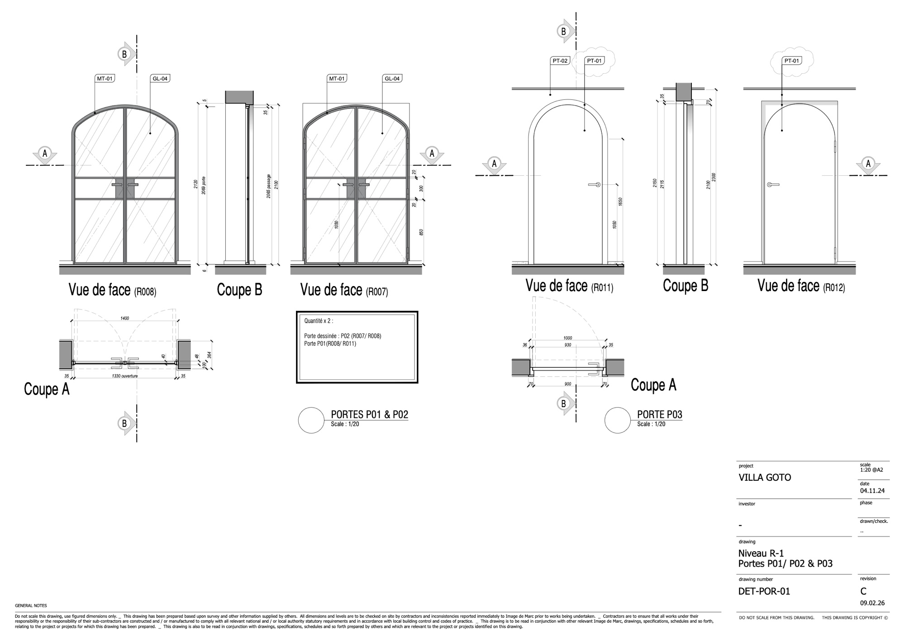

01
Niveau R-1 — Portes vitrées cintréesPoziom R-1 — Łukowe drzwi szklane Portes P01 / P02 & P03 Drzwi P01 / P02 i P03
DET-POR-01
Rév.Wer. C — 09.02.26
ÉchelleSkala 1:20 @ A2
ÉchelleSkala 1:20 @ A2

Portes regroupéesZestaw drzwi
- P01Vantail double cintréŁukowe drzwi dwuskrzydłowe ×2Entre R008 et R011Między R008 i R011
- P02Vantail double cintré (porte dessinée)Łukowe drzwi dwuskrzydłowe (drzwi rysunkowe) ×2Entre R007 et R008Między R007 i R008
- P03Porte simple cintréePojedyncze drzwi łukoweAccès R012Wejście R012
Dimensions principales (mm)Wymiary główne (mm)
| P01 / P02 — passageprześwit | 2065 H × 1330 |
|---|---|
| P01 / P02 — hors-toutwymiar zewn. | 2100 H — vantailskrzydło 850 + jeuxluzy 20+20 |
| P01 / P02 — épaisseur dormantgrubość ościeżnicy | 35 mm |
| P03 — passageprześwit | 2150 H × 900 |
| P03 — hors-toutwymiar zewn. | 2300 H × 1000 L (930 + 35 + 35) |
| P03 — épaisseurgrubość | 36 / 35 mm |
Matériaux & finitionsMateriały i wykończenia
NotesUwagi
Quantité ×2 pour P01 et P02 (paire). Porte dessinée de référence : P02. Vitrages chevronnés type atelier, dormant métallique noir. P03 cintrée pleine en peinture. Ilość ×2 dla P01 i P02 (para). Drzwi rysunkowe odniesienia: P02. Szklenie w jodełkę typu atelier, ościeżnica metalowa czarna. P03 łukowe pełne malowane.